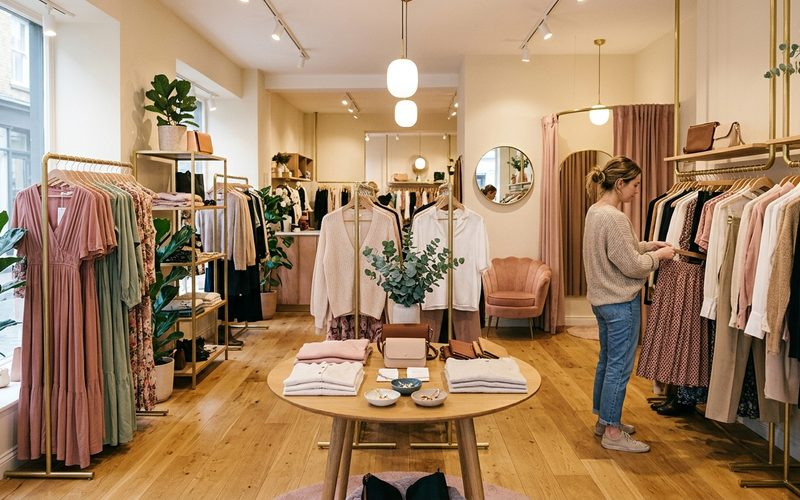
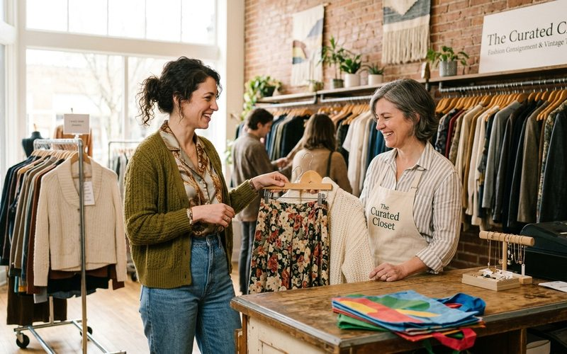

14 de fevereiro de 2027
Savassi BH: o bairro da moda consciente em Belo Horizonte
Conheça a cena de moda consciente do Savassi e por que o Outra Vez faz parte desse movimento.
Ler artigo →Curadoria, estilo, moda circular e tudo que inspira um guarda-roupa mais consciente e mais bonito.
14 de fevereiro de 2027
Conheça a cena de moda consciente do Savassi e por que o Outra Vez faz parte desse movimento.
Ler artigo →
31 de janeiro de 2027
A moda circular fortalece a economia local, gera emprego no bairro e mantém o dinheiro circulando perto de você.
Ler artigo →
17 de janeiro de 2027
Algumas cores são verdadeiros coringas no guarda-roupa. Aprenda quais paletas funcionam com tudo.
Ler artigo →
3 de janeiro de 2027
O jeans vintage voltou com força. Saiba como identificar, garimpar e usar bem o denim de segunda mão.
Ler artigo →
20 de dezembro de 2026
Boas fotos aumentam as chances de venda. Aprenda técnicas simples de iluminação e composição.
Ler artigo →
6 de dezembro de 2026
Descubra como o minimalismo no guarda-roupa, construído com brechó, se traduz em liberdade e elegância.
Ler artigo →
22 de novembro de 2026
Uma bolsa certa muda o look inteiro. Descubra quais modelos são atemporais e como encontrá-los em brechós.
Ler artigo →
8 de novembro de 2026
Saber identificar qualidade pelo toque é a habilidade mais valiosa do garimpo. Aprenda a ler o tecido com as mãos.
Ler artigo →
25 de outubro de 2026
A moda consciente deixou de ser tendência para se tornar uma virada cultural permanente.
Ler artigo →
11 de outubro de 2026
Seda, lã, linho e veludo pedem cuidados específicos. Aprenda a conservar peças delicadas para que durem anos.
Ler artigo →
27 de setembro de 2026
O vestido midi é a peça mais versátil do guarda-roupa feminino. Descubra por que ele funciona em todas as ocasiões.
Ler artigo →
13 de setembro de 2026
Looks despojados e com personalidade para o fim de semana — todos montados com peças garimpadas.
Ler artigo →
30 de agosto de 2026
Garimpar sapatos exige atenção especial. Aprenda o que avaliar antes de comprar calçados em brechós.
Ler artigo →
16 de agosto de 2026
Os números por trás do fast fashion revelam impactos que poucos conhecem. Compare com o modelo circular.
Ler artigo →
2 de agosto de 2026
Preparar bem suas roupas para consignação aumenta as chances de venda e o retorno financeiro.
Ler artigo →
19 de julho de 2026
Os anos 80 e 90 moldaram a moda de formas que ainda ressoam hoje. Por que o vintage desse período é tão valorizado.
Ler artigo →
5 de julho de 2026
Vestir-se bem para o trabalho não precisa custar caro. Looks profissionais sofisticados com peças de brechó.
Ler artigo →
21 de junho de 2026
Misturar estampas é desafiador — e elegante quando bem feito. Aprenda as regras para arriscar mais.
Ler artigo →
7 de junho de 2026
O blazer é a peça mais versátil do guarda-roupa: casual, formal, elegante. Saiba como escolher o seu no brechó.
Ler artigo →
24 de maio de 2026
Um acessório certo transforma um look básico em algo especial. Cintos, lenços, bijuterias e bolsas que elevam tudo.
Ler artigo →
10 de maio de 2026
A moda lenta é o antídoto para o fast fashion. Entenda o que significa desacelerar o consumo de roupas.
Ler artigo →26 de abril de 2026
Algumas tendências atravessam décadas sem envelhecer. Descubra quais modas são verdadeiramente atemporais.
Ler artigo →
12 de abril de 2026
Peças de segunda mão bem cuidadas duram muito mais. Aprenda os cuidados essenciais para cada tipo de tecido.
Ler artigo →
29 de março de 2026
Farm, Animale, Osklen e outras. Saiba quais marcas nacionais garimpar em brechós e por que valem a busca.
Ler artigo →
15 de março de 2026
O guarda-roupa cápsula é a resposta minimalista ao excesso de roupas. Descubra como montar o seu com brechó.
Ler artigo →
18 de janeiro de 2026
Garimpar roupas vintage de qualidade exige técnica. Saiba como fazer os melhores achados.
Ler artigo →
4 de janeiro de 2026
Entenda por que as peças minimalistas de segunda mão estão mais desejadas do que nunca.
Ler artigo →
21 de dezembro de 2025
O que vale a pena desapegar? Descubra como funciona vender suas roupas usadas em BH.
Ler artigo →
7 de dezembro de 2025
Seda, linho, algodão — aprenda a ler a etiqueta e o toque para fazer grandes achados.
Ler artigo →
23 de novembro de 2025
A curadoria transforma o garimpo em uma experiência de descoberta. Entenda o que diferencia um brechó curado.
Ler artigo →
9 de novembro de 2025
Garimpar roupas antigas e de qualidade exige técnica. Saiba como fazer os melhores negócios.
Ler artigo →
26 de outubro de 2025
Entenda por que as peças minimalistas de segunda mão estão mais desejadas do que nunca.
Ler artigo →
12 de outubro de 2025
O que vale a pena desapegar? Descubra como funciona vender suas roupas usadas em BH.
Ler artigo →
28 de setembro de 2025
Seda, linho, algodão — aprenda a olhar a etiqueta e o toque para fazer grandes achados.
Ler artigo →
14 de setembro de 2025
Descubra como o consumo consciente em brechós revoluciona o seu estilo e o planeta.
Ler artigo →